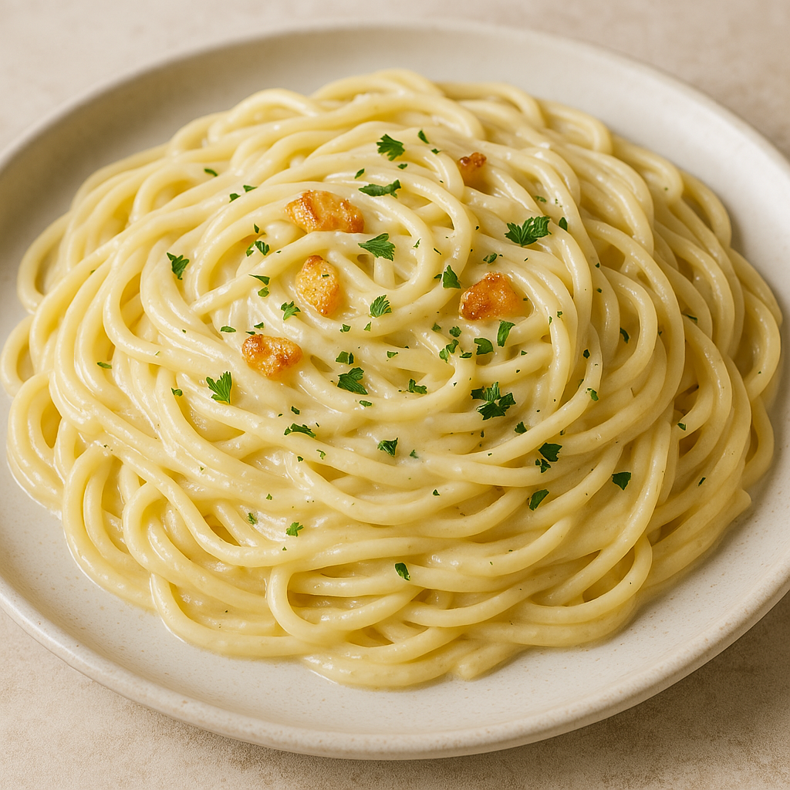

Creamy Garlic Spaghetti
Instructions
- 200g spaghetti
- 2 cloves garlic (minced)
- 1/2 cup cream
- 2 tbsp olive oil
- Salt & pepper to taste
- Fresh parsley (optional)
Instructions
- Boil pasta in salted water until al dente.
- Sauté garlic in olive oil for 1–2 minutes.
- Add cream and stir over low heat.
- Drain pasta and mix into sauce.
- Season with salt, pepper, and parsley. Serve hot!